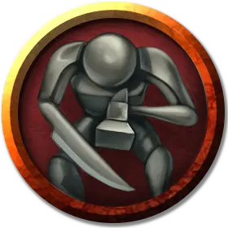

Оживлённая железная статуя
Living Iron Statue
Средний Конструкт, без мировоззрения

Класс Доспеха 16 (природный доспех)
Хиты 102 (12к8 + 48)
Скорость 20 футов
| мод | спас | ||
|---|---|---|---|
| СИЛ | 16 | +3 | +3 |
| ЛОВ | 14 | +2 | +2 |
| ТЕЛ | 18 | +4 | +4 |
| мод | спас | ||
|---|---|---|---|
| ИНТ | 6 | −2 | −2 |
| МДР | 10 | +0 | +0 |
| ХАР | 5 | −3 | −3 |
Уязвимость к урону кислота
Иммунитет к урону электричество, яд
Иммунитет к состояниям испуг, истощение, окаменение, отравление, очарование, паралич
Чувства тёмное зрение 60 футов, пассивное Восприятие 10
Опасность 5 (1800 опыта)
Бонус мастерства +3
Особенности
Языки. - понимает языки своего создателя, но не говорит.
Неизменяемая форма. Статуя обладает иммунитетом ко всем заклинаниям и эффектам, изменяющим её форму.
Действия
Мультиатака. Статуя совершает две атаки: одну Клинком и одну Молотом.
Клинок. . Рукопашная атака оружием: +6 к попаданию, досягаемость 5 футов, одна цель. Попадание: 10 (2к6 + 3) рубящего урона.
Молоток. . Рукопашная атака оружием: +6 к попаданию, досягаемость 5 футов, одна цель. Попадание: 10 (2к6 + 3) дробящего урона, и цель падает ничком.
Вихрь (Перезарядка 5-6). Статуя может действием начать вращаться в талии, вокруг своей оси нацеливаясь на выбранных ею существ в пределах 10 футов от неё. Каждая цель должна совершить спасбросок Ловкости Сл 13, получая 19 (3к10 + 3) дробящего урона при провале или половину этого урона при успехе.
Описание
Эта приземистая, крепкая на вид статуя, в настоящее время охраняющая сокровища злого культа на острове Аббатства, сделана из чистого железа. Её руки превращены в смертоносное оружие.